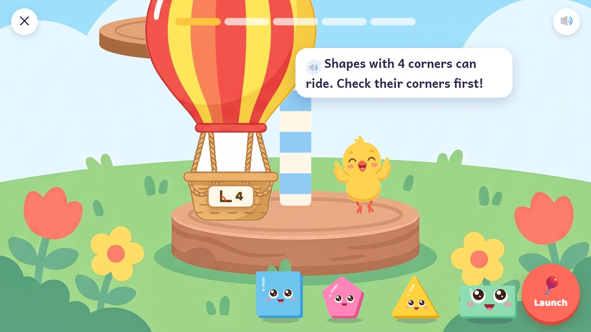
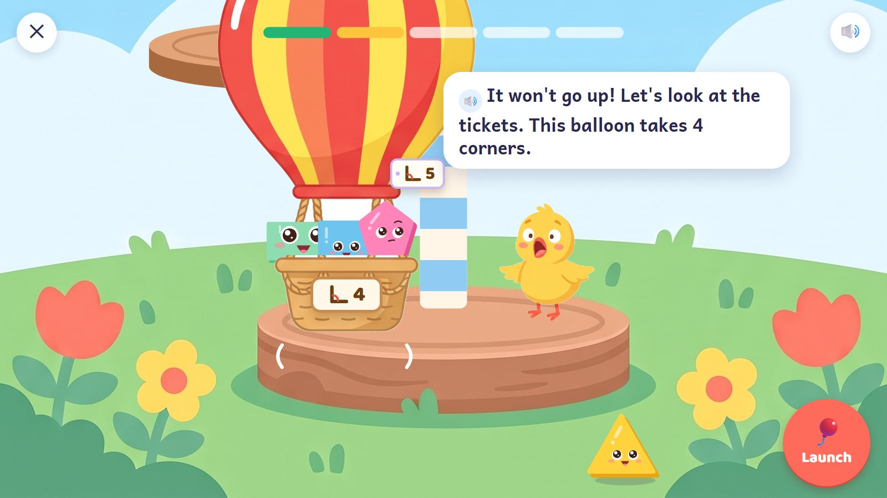
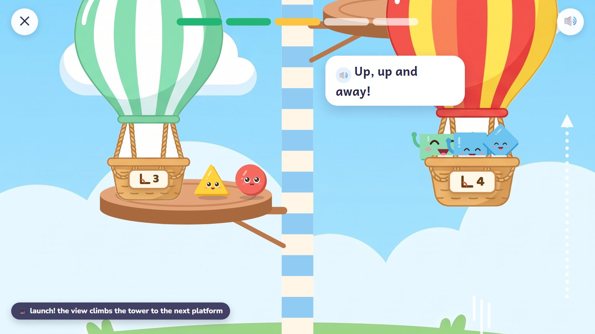
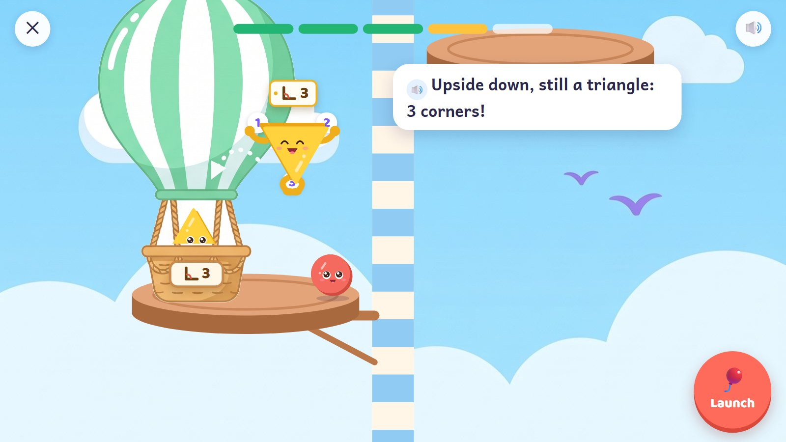
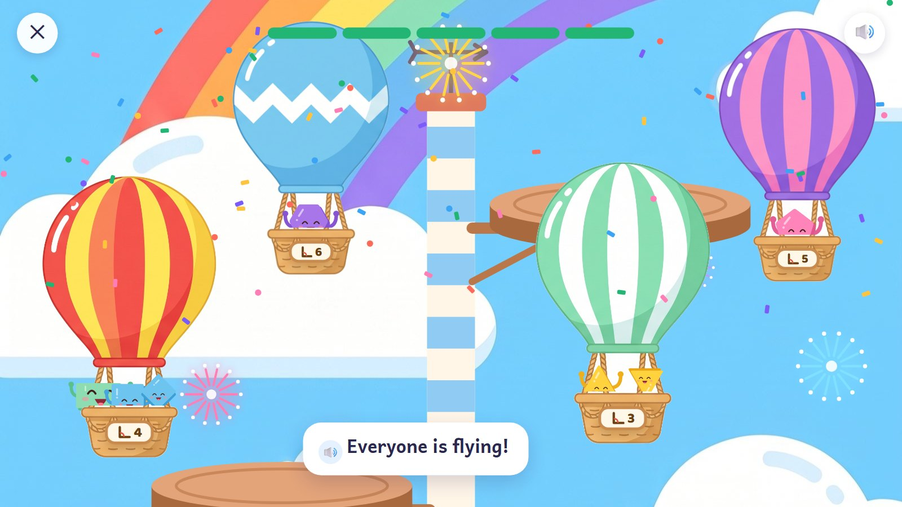

Balloon Tower
A striped weather tower has a launch platform for each round, higher and higher. Each balloon's sign says how many corners its riders need. The child checks a shape by tapping its corners: they light up and count, and the shape gets a ticket with its number. Matching shapes hop in, legs out, and the child presses Launch when the basket is ready.
K–Grade 1 · ages 5–7 E22 Shape inspection (corners and sides)
Skill: Describe 2-D shapes by their corners (and sides); a shape that is turned round is still the same shape. One activity is 5 rounds, about 90–150 seconds.
🎉 The fun
Checking corners, tickets, shapes hopping aboard, launching, climbing the tower.
🎥 The view
Up: after each launch the view climbs the tower to the next platform.
🎆 The finale
Every balloon floats round the top of the tower with its riders waving; fireworks.
Six moments

1The first balloon
The red balloon's sign shows a corner and 4. Shapes wait on the grass with their arms and legs tucked away. The Launch button waits.
🔊 "Shapes with 4 corners can ride. Check their corners first!"
Behind the scenes: Names are spoken from the start. The sign is a picture, so children who cannot read can play.

2Check, ticket, hop
The child taps the square's corners: 1, 2, 3, 4 light up. A ticket with 4 pops out and the square hops aboard, legs out.
🔊 "1, 2, 3, 4 corners: a ticket for this balloon! I'm a square."
Behind the scenes: Checking is the maths: a shape is chosen by its corners, not by its look.

3A wrong try
The pentagon's ticket says 5, but it went in anyway and Launch was pressed. The balloon tugs and stays down.
🔊 "It won't go up! Let's look at the tickets. This balloon takes 4 corners."
Behind the scenes: The pentagon waits in the basket until the child moves it out. When to launch is the child's decision.

4Launch!
The right riders wave as the balloon rises. The view climbs the tower to the next platform, where the green balloon (3 corners) waits.
🔊 "Up, up and away!"
Behind the scenes: Each round has 2 to 4 riders. The climb takes under a second, after the round is finished.

5A turned triangle
A triangle upside down is still a triangle: checked, 3 corners, ticket, hop.
🔊 "Upside down, still a triangle: 3 corners!"
Behind the scenes: Turned squares and triangles come early. When a shape turns, its face and limbs stay upright.

6Everyone flying
Every balloon floats round the top of the tower, the riders waving. Fireworks.
🔊 "Everyone is flying!"
Behind the scenes: No semicircle in marked corner questions: whether it has corners depends on the definition.
The frames are mock-ups: Gemini's drawings (backgrounds, friends, things) and shapes and numbers drawn by code, put together as the app would at run time. In the app everything moves; here it stands still.
How it changes
| What changes | Range |
|---|---|
| Rule | corners → sides → corners and sides → "4 corners and 4 equal sides" (Grade 1) |
| Shapes | triangles, squares, rectangles, pentagons, hexagons, turned and stretched ones |
| Riders a round | 2 to 4 |
| Balloons | 5 an activity, one for each platform |
| Planned activities | E22: 80 planned cards, Pre-K to Grade 5 |
From a model to a word problem
| Step | In this activity |
|---|---|
| 1. See it | Watch the chick check one shape and give it a ticket. |
| 2. Fill one part | Two riders are in; find the last one. |
| 3. On your own | Check and board all the shapes for one balloon. |
| 4. Check it | "Frog says the turned square can't ride the 4-corner balloon. Is he right?" |
| 5. Word problem | "A balloon for shapes with 3 sides and 3 corners: who can ride?" |
Wrong answers we expect, and what happens
| Mistake | Looks like | What happens (never red, never "wrong") |
|---|---|---|
| Choosing by look | "it looks like a house" | check its corners |
| A turned square | thinks it has a different number of corners | it turns back slowly; count again |
| Counted a corner twice | one corner tapped two times | each corner lights up only once |
| Sides for corners | counts sides when asked for corners | (later) sides and corners light up in different colours |
What it needs
- The launch field (drawn, tall); the tower and its platforms, drawn by code
- 4 balloons (drawn)
- The chick in four poses (drawn); living shapes drawn by code
- Voice: shape names, corner counts, 6 tips
Test robot: Counts each shape's corners from its geometry, boards exactly the matching ones and presses Launch. Once a round it boards a wrong shape, to check the balloon stays down and the tip plays.
One question
← Back to the plan · ← Firework Numbers · Caterpillar Bridges →